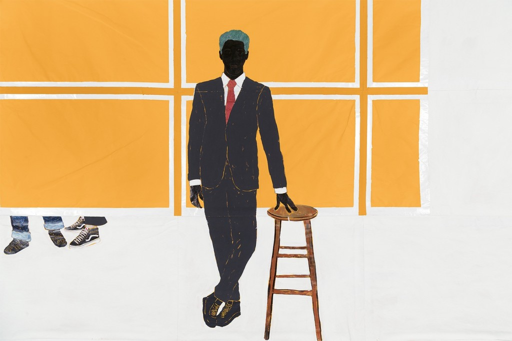
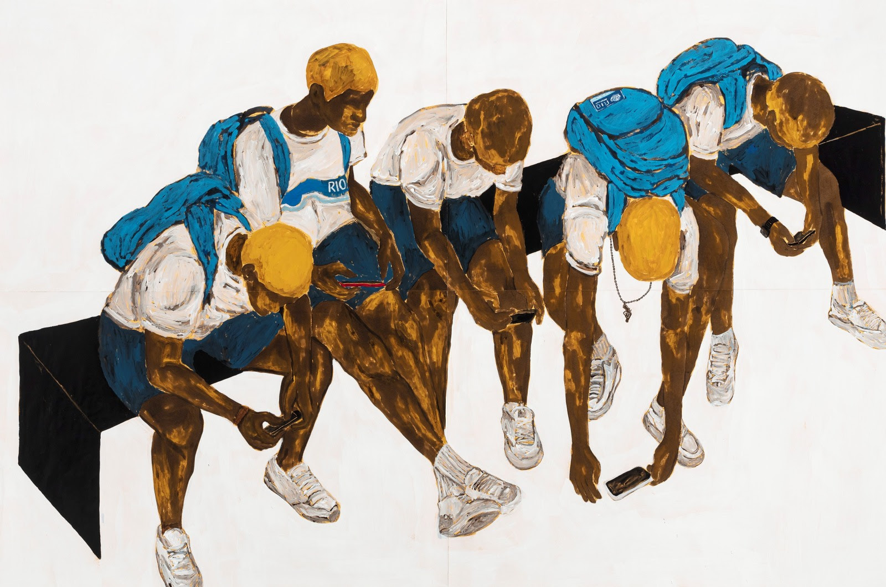

Guilherme, 17
Volta da escola e assume o cuidado do avô, que precisa de ajuda para se locomover, tomar remédio na hora certa e comer. Faz isso todo dia útil, há dois anos.
- Cuidado de idoso
- Rotina de medicação
- Responsabilidade diária
Uma geração que não consegue encontrar trabalho decente não pode construir seu futuro com confiança.
Gilbert F. Houngbo, diretor-geral da Organização Internacional do Trabalho, na apresentação do relatório Tendências Globais do Emprego Juvenil 2026
Página destinada ao jovem que já cuidou, já consertou, já cozinhou, já vendeu, e mesmo assim escreve “experiência: nenhuma” quando chega a hora de fazer um currículo.
17,5%
dos 46,6 milhões de jovens de 15 a 29 anos do país não estavam trabalhando, não estudavam no ensino regular e não faziam curso de qualificação em 2025. São 8,1 milhões de pessoas.
IBGE, Pesquisa Nacional por Amostra de Domicílios (PNAD) Educação, divulgada em junho de 2026.
7 em cada 10
adolescentes de 14 a 17 anos que trabalham no Brasil trabalham sem registro. A informalidade nessa faixa chega a 72,8%.
Ministério do Trabalho e Emprego, a partir da PNAD Contínua do primeiro trimestre de 2026.
Nenhum dos dois números fala de falta de experiência: falam de falta de registro. O que a pessoa sabe fazer não sumiu, só nunca foi escrito em lugar nenhum. Ninguém contou que aquilo cabe num currículo, nem como colocar.

As etiquetas abaixo não foram inventadas para esta página: são as mesmas competências que o questionário devolve quando alguém marca essas atividades.
Guilherme, 17
Volta da escola e assume o cuidado do avô, que precisa de ajuda para se locomover, tomar remédio na hora certa e comer. Faz isso todo dia útil, há dois anos.
Beatriz, 19
Aprendeu a consertar o próprio celular porque não tinha como pagar a assistência. Hoje troca tela e bateria e resolve o aparelho das colegas quando quebra.
Janaína, 22
É voluntária na igreja e cozinha para os eventos da comunidade. Calcula a quantidade, organiza a compra e serve mesa para dezenas de pessoas.

O rezumaz é um site que pergunta sobre o dia a dia da pessoa e devolve um currículo pronto, de graça e sem cadastro. Nenhuma das perguntas é sobre emprego anterior. As três decisões abaixo explicam por que ele foi feito assim.
Um currículo em branco pede dezenas de campos de uma vez, e é o formato que mais faz gente desistir. No celular o abandono é ainda maior que no computador. Quebrar em etapas muda o resultado: a HubSpot mede 86% mais conversão em formulários de múltiplas etapas do que na versão de tela única.
O problema não é o tamanho do texto, é o tamanho do bloco. O formato preferido da geração Z é o vídeo de 1 a 3 minutos, não o de menos de um. O que funciona é o fatiado, com começo e fim visíveis a cada pedaço. Por isso aqui se responde uma carta por vez.
Baymard Institute, HubSpot e pesquisa Opinion Box / Influency.me.
Representatividade é poder se enxergar no lugar. O jovem que nunca teve carteira assinada olha para o mundo das empresas e não encontra nada ali parecido com ele: nem a linguagem, nem as roupas, nem os exemplos. Quem não se vê num espaço dificilmente se candidata a ele.
Por isso o visual se aproxima de quem vai usar e não do RH: as cores, o jeito de perguntar, o tamanho das telas.
A linguagem leve também está nas linhas do código e tem propósito: melhoria progressiva. A página é construída para funcionar na base mais fraca possível, e quem tem o aparelho mais fraco é justamente quem menos pode ficar de fora.
Direito que ninguém explicou não protege ninguém. Parte do que garante uma vaga a esse jovem está em lei e mesmo assim passa batido, justamente por quem mais precisaria usar. Então, toda vez que uma pergunta esbarra num desses direitos, a explicação vem junto: o que é, para quem vale, e o que muda ao marcar ou deixar em branco.
Não é para empurrar ninguém a se declarar. Às vezes a melhor decisão é não declarar, e isso também precisa ser dito. A escolha só é escolha se a pessoa souber o que muda de um lado e do outro.
Até 2030, empoderar e promover a inclusão social, econômica e política de todos, independentemente da idade, gênero, deficiência, raça, etnia, origem, religião, condição econômica ou outra.
Meta 10.2 dos Objetivos de Desenvolvimento Sustentável, ONU
A meta cita idade e deficiência no mesmo fôlego, e é exatamente aí que este projeto se encaixa. A exclusão que ele ataca não é a falta de vaga: é a barreira anterior, a de não conseguir nem apresentar o que já se fez. Enquanto a experiência de quem cuida, conserta e cozinha não contar como experiência, a porta continua fechada antes da entrevista.
São quatro etapas, nenhuma pergunta sobre emprego anterior e nenhum cadastro.